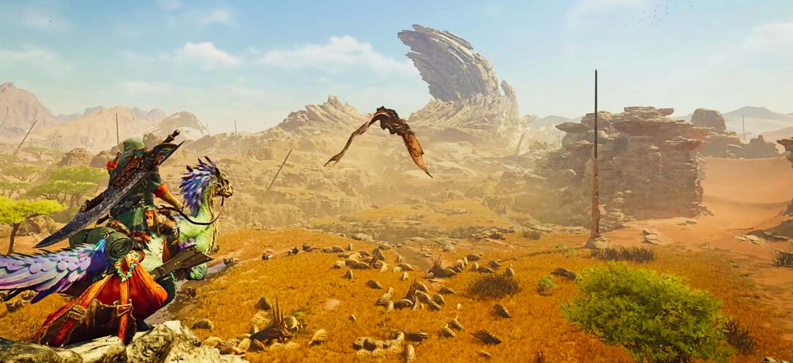
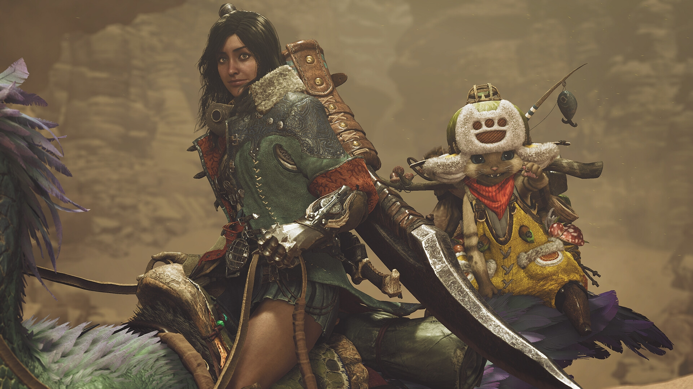

Bienvenue sur Hunterpedia
Bonjour chasseur et bienvenue sur Hunterpedia.
Ici, tu y retrouveras toutes les informations dont tu aura besoin pour devenir un chasseur maitre (ou rang G
pour les plus anciens d'entre nous) !
Etant actuellement en formation de dévelopeur web, ce site est en pleine création et à donc comme but
premier de me former au metier.
Monster Hunter Wilds, qu'est-ce que c'est ?

Tu incarneras un
Bon, tout ça, tu le sais sûrement déjà ! En tout cas que tu sois un nouveau joueur qui découvre la license
Si tu commence l'aventure avec ce
